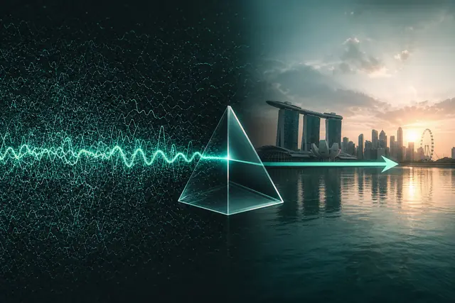

Blog de Marketing Mondays
La comunidad de marketing de Singapur que sustituye las opiniones por una señal con evidencias a la semana, y el miedo por colegas. Diez artículos sobre lo que dicen las señales y qué hacer al respecto.

El equipo de marketing de 2027: ¿más pequeño, más rápido u obsoleto?
Señal descifrada: cómo es el equipo de marketing de 2027 cuando los agentes de IA asumen el trabajo rutinario, y qué roles humanos ganan valor en lugar de perderlo.

La autopsia de una venta perdida
Señal descifrada: cómo hacer una autopsia sin culpables de un acuerdo o un cliente que perdió, y encontrar la señal de audiencia que pasó por alto antes de que le costara cara.

El papel de la IA en el marketing creativo, de medios y de marca
Lo que aprendimos en el panel de Marketing Mondays en Block71 sobre la IA en lo creativo, los medios y la marca, y el marco que seguimos usando para decidir dónde lidera la IA.

Métricas de vanidad: los números que le hacen sentir bien
Señal descifrada: por qué un ROAS del 400 % puede ocultar una pérdida, cómo detectar métricas de vanidad en sus informes y qué medir en su lugar.

¿Sustituirá la IA a los profesionales del marketing? Una respuesta basada en señales
Señal descifrada: qué hay realmente detrás del miedo a que la IA nos sustituya, qué habilidades de marketing ganan valor y un plan de 30 días para adelantarse.

El síndrome del impostor en marketing: conózcalo antes de mostrarlo
Señal descifrada: por qué tantos profesionales del marketing capaces se sienten unos impostores, y cómo la evidencia y los colegas construyen una confianza que no hace falta fingir.

Cómo escapar del mar de uniformidad cuando todos usan IA
Señal descifrada: por qué la IA generativa hace que las marcas suenen igual, y cómo las tensiones de la audiencia y la narrativa le ayudan a diferenciarse.

El método de la señal única: cómo desciframos un episodio del lunes
Cómo Marketing Mondays elige cada semana una señal real del mercado, la descifra en minutos y la convierte en una conclusión que puede usar ese mismo día.
Previsión de medios: retail media, Generación Z y el próximo presupuesto
Señal descifrada: por qué a muchos planes de medios les falta visión de futuro, qué cambian las redes de retail media y la segmentación de la Generación Z, y cómo planificar con antelación.
Cuando las respuestas de la IA sustituyen a la página de resultados de búsqueda
Señal descifrada: qué significan las respuestas de la IA generativa para la visibilidad de marca, y cómo pueden los profesionales del marketing ganarse un lugar en ChatGPT, Gemini y AI Overviews.